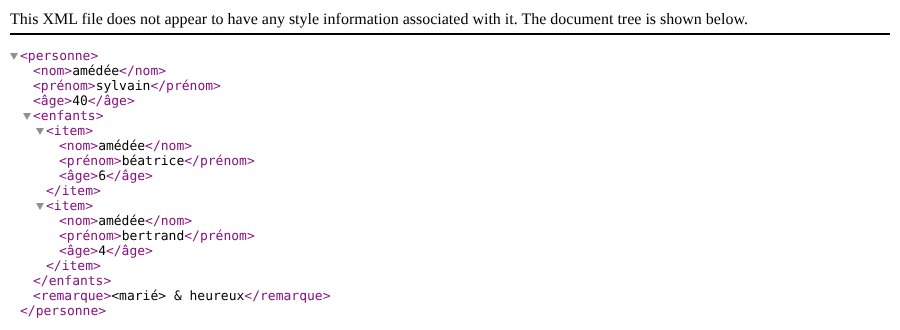

22. Exercice d'application – version 11
Il est encore fréquent que des services web envoient leur réponse sous la forme d'un document XML plutôt que d'un document JSON :
- le document JSON est plus léger mais il faut un mode d'emploi pour le comprendre ;
- le document XML est plus verbeux mais il est autodocumenté. Sa compréhension est immédiate .
Nous modifions l'application client / serveur de la version 10 pour que le serveur envoie désormais un document XML comme réponse à ses clients. Nous mettons ainsi en pratique le chapitre précédent.
22.1. Le serveur

Cette architecture sera implémentée par les fichiers suivants :
| scripts-web/impots/version-11
├── Data
│ ├── .htaccess
│ ├── config-server.json
│ └── logs.txt
├── Utilities
│ ├── XmlUtilitaires.php
│ └── testXml.php
└── impots-server.php
|
22.1.1. La classe [XmlUtilitaires]
Le cours PHP 7 ajoutait à la classe [Utilitaires] une méthode [getXmlForArrayOfAttributes] qui rendait le document XML d'un tableau. Notre serveur utilise déjà la classe [Utilitaires] de la version 5 (pour la classe [Database]) : nous créons une nouvelle classe [XmlUtilitaires] :
| <?php
declare(strict_types=1);
// espace de noms
namespace Application;
// des fonctions utilitaires pour le format XML : la classe n'est ni instanciable, ni dérivable
final class XmlUtilitaires
{
// constructeur privé : la classe ne peut être instanciée
private function __construct()
{
}
// rend le document XML d'un tableau [$data] : l'élément racine s'appelle [$racine]
// les clés du tableau deviennent des noms d'éléments, les valeurs leur contenu
public static function arrayToXml(array $data, string $racine): string
{
// un document XML vide (nouvelle API DOM de PHP 8.4)
$document = \Dom\XMLDocument::createEmpty();
// le document sera indenté
$document->formatOutput = true;
// l'élément racine et ses descendants
$document->append(self::element($document, $racine, $data));
// le texte XML du document
return $document->saveXml();
}
// rend l'élément XML [<$nom>$valeur</$nom>]
private static function element(\Dom\XMLDocument $document, string $nom, mixed $valeur): \Dom\Element
{
$element = $document->createElement($nom);
if (is_array($valeur)) {
// un tableau : chaque élément du tableau devient un élément fils (appel récursif)
foreach ($valeur as $clé => $sousValeur) {
// les éléments d'une liste (clés 0, 1, 2...) s'appellent [item]
$element->append(self::element($document, is_int($clé) ? "item" : $clé, $sousValeur));
}
} else {
// une valeur simple devient le texte de l'élément (les caractères <, >, & sont codés par DOM)
$element->textContent = match (true) {
is_bool($valeur) => $valeur ? "true" : "false",
default => (string) $valeur,
};
}
return $element;
}
}
|
Commentaires
- ligne 9 : comme la classe [Utilitaires] de la version 5, la classe n'a que des méthodes statiques. Elle est [final] et son constructeur est privé : elle ne peut être ni dérivée, ni instanciée ;
- ligne 18 : la méthode statique [arrayToXml] rend le document XML du tableau [$data] passé en paramètre. Le second paramètre est le nom de l'élément racine du document ;
- ligne 21 : nous utilisons la nouvelle API DOM de PHP 8.4, présentée au chapitre précédent. La méthode statique [createEmpty] crée un document XML vide. Le script PHP 7 utilisait [SimpleXML], qui sait aussi construire un document, mais moins bien : il fallait coder soi-même les caractères spéciaux du texte avec la fonction [htmlspecialchars] ;
- ligne 23 : le document produit sera indenté, ce qui le rend plus lisible ;
- ligne 25 : on ajoute au document son élément racine, construit par la méthode [element] ;
- ligne 27 : la méthode [saveXml] rend le texte XML du document ;
- ligne 31 : la méthode privée [element] rend l'élément XML de nom [$nom] représentant la valeur [$valeur] ;
- ligne 33 : la méthode [createElement] du document crée l'élément ;
- lignes 34-38 : si la valeur est un tableau, chacun de ses éléments devient un élément fils, construit par un appel récursif à la méthode [element]. Les clés du tableau deviennent les noms des éléments fils. Les clés d'une liste sont les entiers 0, 1, 2... qui ne peuvent être des noms d'éléments XML : ces éléments s'appellent alors [item]. Le script PHP 7 les appelait [i0], [i1], [i2]... ;
- lignes 40-45 : sinon, la valeur devient le texte de l'élément, affecté à sa propriété [textContent]. Les caractères [<], [>] et [&] du texte sont codés par DOM ([<], [>], [&]). Les booléens sont écrits [true] et [false] ; les autres valeurs sont converties en chaînes de caractères. L'expression [match (true)] choisit la première branche dont la condition est vraie .
Nous écrivons le script de test [testXml.php] suivant :
| <?php
// respect strict des types déclarés des paramètres et des résultats des fonctions
declare(strict_types=1);
// dépendance
require_once __DIR__ . "/XmlUtilitaires.php";
use Application\XmlUtilitaires;
// un tableau associatif
$array = [
"nom" => "amédée",
"prénom" => "sylvain",
"âge" => 40,
"enfants" => [
["nom" => "amédée", "prénom" => "béatrice", "âge" => 6],
["nom" => "amédée", "prénom" => "bertrand", "âge" => 4],
],
"remarque" => "<marié> & heureux",
];
// la réponse est un document XML
header("Content-Type: application/xml; charset=utf-8");
print XmlUtilitaires::arrayToXml($array, "personne");
|
- lignes 12-21 : un tableau associatif contenant une liste et un texte contenant des caractères spéciaux du XML ;
- ligne 23 : la fonction [header] fixe l'entête HTTP [Content-Type] de la réponse : c'est un document XML ;
- ligne 24 : le document XML du tableau, d'élément racine [personne], est envoyé au client .
Demandons l'URL [http://localhost/php8-oct-2026/scripts-web/impots/version-11/Utilities/testXml.php] avec [curl] :
| > curl http://localhost/php8-oct-2026/scripts-web/impots/version-11/Utilities/testXml.php
<?xml version="1.0" encoding="UTF-8"?>
<personne>
<nom>amédée</nom>
<prénom>sylvain</prénom>
<âge>40</âge>
<enfants>
<item>
<nom>amédée</nom>
<prénom>béatrice</prénom>
<âge>6</âge>
</item>
<item>
<nom>amédée</nom>
<prénom>bertrand</prénom>
<âge>4</âge>
</item>
</enfants>
<remarque><marié> & heureux</remarque>
</personne>
|
- lignes 7-18 : la liste [enfants] et ses deux éléments [item] ;
- ligne 19 : les caractères [<], [>] et [&] ont été codés .
Un navigateur affiche le même document sous forme d'arbre :

On remarquera que [Chrome] a décodé le texte de l'élément [remarque].
22.1.2. Le script serveur
Le script serveur [impots-server.php] doit être modifié ainsi que son fichier de configuration [config-server.json] :
| {
"databaseFilename": "../version-08/Data/database-mysql.json",
"dependencies": [
"../../../scripts-console/impots/version-05/Entities/ExceptionImpots.php",
"../../../scripts-console/impots/version-05/Entities/TaxAdminData.php",
"../../../scripts-console/impots/version-05/Entities/Database.php",
"../../../scripts-console/impots/version-05/Utilities/Utilitaires.php",
"../version-08/Dao/InterfaceServerDao.php",
"../version-08/Dao/ServerDao.php",
"../version-09/Dao/ServerDaoWithSession.php",
"../version-08/Metier/InterfaceServerMetier.php",
"../version-08/Metier/ServerMetier.php",
"../version-09/Utilities/Logger.php",
"../version-09/Utilities/SendAdminMail.php",
"Utilities/XmlUtilitaires.php"
],
|
- ligne 15 : on inclut la nouvelle classe [XmlUtilitaires]. Le reste de la configuration est celui de la version 10 .
Les modifications du script serveur sont les suivantes :
| }
// envoi de la réponse HTTP au client
// $result : le tableau à envoyer, sous la forme du document XML <réponse>...</réponse>
// $statusCode : le statut HTTP de la réponse
// $headers : des entêtes HTTP à ajouter à la réponse
// $logger : le journal de l'application (null s'il n'a pu être créé)
// $redis : le client Redis (null s'il n'a pas encore été créé)
function sendResponse(
array $result,
int $statusCode,
array $headers = [],
?Logger $logger = null,
?RedisClient $redis = null
): void {
// la réponse XML
$response = new Response(XmlUtilitaires::arrayToXml($result, "réponse"), $statusCode, $headers);
$response->headers->set("Content-Type", "application/xml; charset=utf-8");
// envoi
$response->send();
// log en JSON, plus concis que le XML
$logger?->write(json_encode(
["réponse" => $result],
JSON_UNESCAPED_UNICODE | JSON_UNESCAPED_SLASHES | JSON_PRESERVE_ZERO_FRACTION
));
// fermeture de la connexion au serveur Redis
$redis?->disconnect();
}
|
Commentaires
- la classe [JsonResponse] n'est plus utilisée : la réponse est une simple réponse [Response] ;
- ligne 212 : la réponse du serveur est désormais le document XML d'élément racine [réponse] du tableau [$result] ;
- ligne 213 : on indique que la réponse est un document XML codé en UTF-8 ;
- lignes 217-220 : la réponse est notée dans les logs en JSON, plus concis que le XML .
Le reste du script est inchangé. Toutes les réponses passant par la fonction [sendResponse], il suffit de modifier celle-ci pour que toutes les réponses, y compris les réponses d'erreur, soient des documents XML.
Test
Demandons l'URL [http://localhost/php8-oct-2026/scripts-web/impots/version-11/impots-server.php?marié=oui&enfants=2&salaire=60000] avec [curl] :
| > curl -i -u admin:admin "http://localhost/php8-oct-2026/scripts-web/impots/version-11/impots-server.php?mari%C3%A9=oui&enfants=2&salaire=60000"
HTTP/1.0 200 OK
Date: Fri, 02 Oct 2026 12:29:50 GMT
Server: Apache/2.4.58 (Ubuntu)
X-Powered-By: PHP/8.5.11
Cache-Control: max-age=0, private, must-revalidate
Set-Cookie: PHPSESSID=cdcb082d1342f5b0a273f76a30f92fc6; path=/
Cache-Control: no-cache, private
Vary: Accept-Encoding
Connection: close
Content-Type: application/xml; charset=utf-8
<?xml version="1.0" encoding="UTF-8"?>
<réponse>
<impôt>3375</impôt>
<surcôte>0</surcôte>
<décôte>0</décôte>
<réduction>0</réduction>
<taux>0.14</taux>
</réponse>
|
- ligne 7 : le cookie de session envoyé par le serveur à la 1re requête ;
- ligne 11 : le type du document envoyé ;
- lignes 13-20 : le document XML de la réponse .
Dans un navigateur, après authentification, on obtient le résultat suivant :

Les réponses d'erreur sont elles aussi des documents XML. Une requête aux paramètres incorrects :
| > curl -u admin:admin "http://localhost/php8-oct-2026/scripts-web/impots/version-11/impots-server.php?mari%C3%A9=x&enfants=2"
<?xml version="1.0" encoding="UTF-8"?>
<réponse>
<erreurs>
<item>Méthode GET requise avec les seuls paramètres [marié, enfants, salaire]</item>
<item>paramètre marié [x] invalide</item>
<item>paramètre salaire manquant</item>
</erreurs>
</réponse>
|
Une requête d'un utilisateur inconnu :
| > curl -u x:x "http://localhost/php8-oct-2026/scripts-web/impots/version-11/impots-server.php"
<?xml version="1.0" encoding="UTF-8"?>
<réponse>
<erreur>Echec de l'authentification [x]</erreur>
</réponse>
|
22.2. Le client
Nous nous intéressons maintenant à la partie client de l'application.

Cette architecture sera implémentée par les fichiers suivants :
| scripts-console/impots/version-11
├── Dao
│ └── ClientDao.php
├── Data
│ ├── config-client-ko.json
│ ├── config-client.json
│ ├── errors.json
│ ├── results.json
│ └── taxpayersdata.json
├── Main
│ └── MainImpotsClient.php
└── Tests
└── ClientMetierTest.php
|
Dans la nouvelle version, seuls changent :
- le fichier de configuration [config-client.json] ;
- la couche [dao] du client .
Le fichier de configuration [config-client.json] devient le suivant :
| {
"urlServer": "http://localhost/php8-oct-2026/scripts-web/impots/version-11/impots-server.php",
"user": {
"login": "admin",
"passwd": "admin"
},
"httpClientOptions": {
"verify_peer": false,
"verify_host": false
},
"taxPayersDataFilename": "Data/taxpayersdata.json",
"resultsFilename": "Data/results.json",
"errorsFilename": "Data/errors.json",
"dependencies": [
"../version-05/Entities/ExceptionImpots.php",
"../version-05/Entities/TaxPayerData.php",
"../version-05/Utilities/Utilitaires.php",
"../version-05/Dao/TraitDao.php",
"../version-08/Dao/InterfaceClientDao.php",
"Dao/ClientDao.php",
"../version-08/Metier/InterfaceClientMetier.php",
"../version-08/Metier/ClientMetier.php"
]
}
|
- ligne 2 : l'URL du serveur de la version 11 ;
- ligne 20 : la nouvelle couche [dao] du client .
22.2.1. La couche [dao]
La classe [ClientDao] de la version 9 est modifiée pour tenir compte du nouveau format de la réponse. On utilise [SimpleXML] pour exploiter celle-ci :
| try {
// on fait la requête au serveur
$response = $this->httpClient->request("GET", $this->urlServer, $options);
// le statut, les entêtes et le document XML de la réponse, même en cas d'erreur (paramètre false)
$statusCode = $response->getStatusCode();
$headers = $response->getHeaders(false);
$contenu = $response->getContent(false);
} catch (ExceptionInterface $ex) {
// le serveur n'a pu être joint
throw new ExceptionImpots("Erreur de communication avec le serveur ({$ex->getMessage()})", 40, $ex);
}
// logs
// print "$contenu\n";
// le serveur envoie le document XML <réponse>...</réponse>
// les options LIBXML_NOERROR et LIBXML_NOWARNING évitent les avertissements de PHP si le XML est invalide
$xml = simplexml_load_string($contenu, options: LIBXML_NOERROR | LIBXML_NOWARNING);
if ($xml === false || $xml->getName() !== "réponse") {
throw new ExceptionImpots("Réponse du serveur invalide [$contenu]", 41);
}
// erreur ?
if ($statusCode !== 200) {
// on lance une exception dont le message est la réponse du serveur, convertie en JSON (plus concis),
// complétée par son statut HTTP
$réponse = json_decode(json_encode($xml, JSON_THROW_ON_ERROR), true, flags: JSON_THROW_ON_ERROR);
$message = json_encode(
["statut HTTP" => $statusCode] + $réponse,
JSON_UNESCAPED_UNICODE | JSON_UNESCAPED_SLASHES | JSON_THROW_ON_ERROR
);
throw new ExceptionImpots($message, 42);
}
// on récupère le cookie de session s'il n'est pas encore connu
if ($this->sessionCookie === null) {
foreach ($headers["set-cookie"] ?? [] as $cookie) {
if (preg_match('/^PHPSESSID=(.+?);/', $cookie, $champs) === 1) {
$this->sessionCookie = "PHPSESSID=$champs[1]";
}
}
}
// on rend la réponse : le tableau [impôt, surcôte, décôte, réduction, taux]
// dans le document XML, toutes les valeurs sont des textes : on les convertit dans leur type
return [
"impôt" => (int) $xml->impôt,
"surcôte" => (int) $xml->surcôte,
"décôte" => (int) $xml->décôte,
"réduction" => (int) $xml->réduction,
"taux" => (float) $xml->taux,
];
}
}
|
Commentaires
- ligne 63 : la réponse du serveur est lue. C'est un document XML [<réponse>…</réponse>] ;
- ligne 72 : la fonction [simplexml_load_string] analyse le document XML reçu et rend un objet [SimpleXMLElement] représentant son élément racine, ou [false] si le document n'est pas un document XML valide. Par défaut, la bibliothèque [libxml] utilisée par [SimpleXML] signale aussi les erreurs du document par des avertissements (warnings) de PHP : les options [LIBXML_NOERROR] et [LIBXML_NOWARNING] les suppriment. Elles sont passées par l'argument nommé [options], ce qui évite d'écrire le paramètre [class_name] qui le précède dans la signature de la fonction ;
- ligne 73 : la méthode [getName] rend le nom de l'élément racine, qui doit être [réponse] ;
- lignes 77-85 : en cas d'erreur, le message de l'exception sera la chaîne JSON de la réponse du serveur plutôt que la chaîne XML reçue, car la chaîne JSON est plus concise. Pour obtenir le tableau associatif de la réponse XML, on utilise une astuce classique : la fonction [json_encode] sait transformer un objet [SimpleXMLElement] en JSON, et [json_decode] transforme ensuite ce JSON en tableau. Le message de l'exception a ainsi la même forme que dans les versions précédentes ;
- lignes 97-103 : on rend le tableau des résultats. Les éléments fils de l'élément [réponse] sont atteints comme des propriétés de l'objet [$xml] ([$xml->impôt]). Dans un document XML, toutes les valeurs sont des textes : contrairement au JSON, le XML ne distingue pas les nombres entiers, les nombres réels et les chaînes de caractères. On convertit donc chaque valeur dans le type attendu par la couche [métier] avec les opérateurs [(int)] et [(float)]. Le client PHP 7 rendait les valeurs sous forme de chaînes de caractères .
Test
Si on lance le client avec un environnement correct (base de données, authentification, logs, Redis), on obtient les résultats habituels :
| > php MainImpotsClient.php
Les résultats ont été enregistrés dans le fichier [Data/results.json]
Terminé
|
Vérifiez les fichiers [taxpayersdata.json, results.json, errors.json] du dossier [Data] : le fichier [results.json] est identique à celui des versions précédentes. Côté serveur, les logs sont les suivants :
| 01/10/26 18:12:15.370 : ---nouvelle requête
01/10/26 18:12:15.370 : Authentification en cours…
01/10/26 18:12:15.370 : Authentification réussie [admin]
01/10/26 18:12:15.370 : paramètres ['marié'=>oui, 'enfants'=>2, 'salaire'=>55555] valides
01/10/26 18:12:15.371 : données fiscales prises en base de données
01/10/26 18:12:15.373 : {"réponse":{"impôt":2814,"surcôte":0,"décôte":0,"réduction":0,"taux":0.14}}
01/10/26 18:12:15.376 : ---nouvelle requête
01/10/26 18:12:15.376 : Authentification prise en session…
01/10/26 18:12:15.376 : paramètres ['marié'=>oui, 'enfants'=>2, 'salaire'=>50000] valides
01/10/26 18:12:15.377 : données fiscales prises dans Redis
01/10/26 18:12:15.377 : {"réponse":{"impôt":1384,"surcôte":0,"décôte":384,"réduction":347,"taux":0.14}}
…
|
Avec le fichier de configuration [config-client-ko.json] (utilisateur inconnu), on obtient :
| > php MainImpotsClient.php config-client-ko.json
Erreur n° 42 : {"statut HTTP":401,"erreur":"Echec de l'authentification [x]"}
Terminé
|
Le message d'erreur a la même forme que dans les versions précédentes, alors que le serveur a répondu par un document XML.
22.2.2. Tests [PHPUnit]
Le test [Tests/ClientMetierTest.php] est celui de la version 10, l'environnement du test étant celui du client de la version 11. Ses résultats sont les suivants :
| > php vendor/bin/phpunit scripts-console/impots/version-11/Tests --testdox
PHPUnit 12.5.37 by Sebastian Bergmann and contributors.
Runtime: PHP 8.5.11
Configuration: .../php8-oct-2026/phpunit.xml
........... 11 / 11 (100%)
Time: 00:00.073, Memory: 16.00 MB
Client Metier (Application\Tests\ClientMetier)
✔ Calculer impot with data set "couple, 2 enfants, 55555"
✔ Calculer impot with data set "couple, 2 enfants, 50000"
✔ Calculer impot with data set "couple, 3 enfants, 50000"
✔ Calculer impot with data set "célibataire, 2 enfants, 100000"
✔ Calculer impot with data set "célibataire, 3 enfants, 100000"
✔ Calculer impot with data set "couple, 3 enfants, 100000"
✔ Calculer impot with data set "couple, 5 enfants, 100000"
✔ Calculer impot with data set "célibataire, 0 enfant, 100000"
✔ Calculer impot with data set "couple, 2 enfants, 30000"
✔ Calculer impot with data set "célibataire, 0 enfant, 200000"
✔ Calculer impot with data set "couple, 3 enfants, 200000"
OK (11 tests, 22 assertions)
|
Les tests réussissent avec la vérification [assertSame] : les valeurs rendues par la couche [dao] ont bien les types attendus, grâce aux conversions faites après la lecture du document XML.